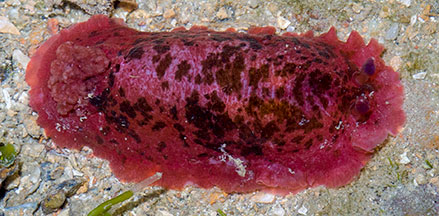
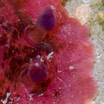
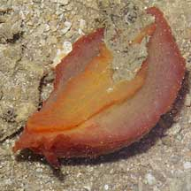
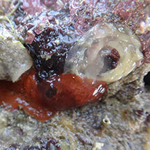
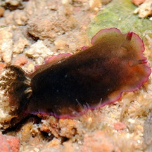
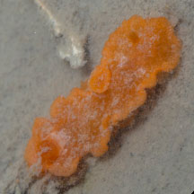
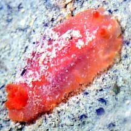

|
|
| nudibranchs text index | photo index |
| Phylum Mollusca > Class Gastropoda > sea slug > Order Nudibranchia |
| Rose
nudibranch Dendrodoris fumata Family Dendrodorididae updated May 2020 Where seen? This brightly coloured rotund nudibranch is sometimes seen on our Northern shores, near boulders with sponges and other encrusting animals. Features: 5-8cm long. Broad fleshy body smooth, generally all red or rose with irregular dark mottling, sometimes greyish-pink. Underside paler. It is said that it turns black as it matures, but some apparently remain red. Sometimes mistaken for Dendrodoris nigra which looks similar in shape and are also red when young and black as adults. Usually Dendrodoris nigra has 10 -15 smaller gills forming a tight cup-shaped circle, placed further to the back and lacks dark blotches on a lighter background. Dendrodoris fumata has 5-6 large bushy feathery branching gills that when expanded, may cover the width of the animal. But the species can be definitively told apart only by looking at small internal features. What does it eat? It eat sponges. It lacks a radula and jaws so it can't rasp or chew its food sponge. Instead, it secretes digestive juices onto the sponge and then sucks up the softened sponge with a long tube. Sort of like a sponge slurpee! |
 Pulau Sekudu, Jan 06 |
 Rhinophores. |
|
 Underside. Pulau Sekudu, Jul 06 |
 Laying egg mass. Cyrene, Mar 13 |
| Rose nudibranchs on Singapore shores |
On wildsingapore
flickr
|
| Other sightings on Singapore shores |
 Pulau Sekudu, Oct 11 |
 Changi, Oct 25 Photo shared by Marcus Ng on facebook. |
 Changi Loyang, May 21 Photo shared by Jianlin Liu on facebook. |
Links
|